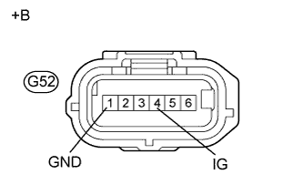

DTC C1232 Заедание в датчике ускорения |
DTC C1243 Заедание в датчике ускорения |
DTC C1245 Ненормальный выходной сигнал датчика ускорения |
DTC C1279 Недопустимое напряжение на выходе датчика ускорения (DTC режима активной диагностики) |
| Код DTC | Условие обнаружения DTC | Неисправный участок |
| C1232 | При скорости автомобиля не менее 10 км/час (6 миль в час) диапазон колебаний сигнала на одном из контактов GL1 или GL2 составляет менее 80 мВ, а диапазон колебаний для другого контакта превышает 1,9 В в течение не менее 30 с. |
|
| C1243 | Следующее состояние повторяется 16 раз.
| |
| C1245 | Следующее условие выполняется в течение не менее 60 с.
| |
| C1279 | Сохраняется в режиме активной диагностики. |
| 1.ПРОВЕРЬТЕ DTC |
Сбросьте коды DTC (Нажмите здесь).
Выключите зажигание.
Включите зажигание (IG).
Проверьте, выводятся ли DTC U0073, U0123, C1210 и/или C1336 (Нажмите здесь).
| Результат | Следующий шаг |
| DTC U0073, U0123, C1210 и/или C1336 не выводятся | А |
| DTC U0073 и/или U0123 выводятся (для моделей с левосторонним рулевым управлением и системой посадки и запуска) | B |
| DTC U0073 и/или U0123 выводятся (для моделей с правосторонним рулевым управлением и системой посадки и запуска) | C |
| DTC C1210 и/или C1336 выводятся | D |
|
| ||||
|
| ||||
|
| ||||
| А | |
| 2.ПРОВЕРЬТЕ МОНТАЖ ДАТЧИКА ЗАМЕДЛЕНИЯ И РЫСКАНЬЯ |
Убедитесь, что датчик замедления и рысканья установлен правильно.
|
| ||||
| OK | |
| 3.ПРОВЕРЬТЕ НАПРЯЖЕНИЕ И СОПРОТИВЛЕНИЕ НА КОНТАКТАХ (IG, GND) |
Отсоедините разъем G52 датчика замедления и рысканья.
|  |
Измерьте напряжение в соответствии со значениями, приведенными в таблице.
| Контакты для подключения диагностического прибора | Положение переключателя | Заданные условия |
| G52-4 (IG) - масса | Зажигание включено (IG) | 11-14 В |
Измерьте сопротивление в соответствии со значениями, приведенными в таблице ниже.
| Контакты для подключения диагностического прибора | Условие | Заданные условия |
| G52-1 (GND) - масса | Всегда | Менее 1 Ом |
| *a | Вид спереди разъема со стороны жгута проводов: (к датчику замедления и рысканья) |
| Результат | Следующий шаг |
| OK (при поиске неисправностей в соответствии с таблицей диагностических кодов неисправностей) | А |
| ОК (при поиске неисправностей в соответствии с таблицей признаков неисправностей) | B |
| NG | C |
|
| ||||
|
| ||||
| А | ||
| ||